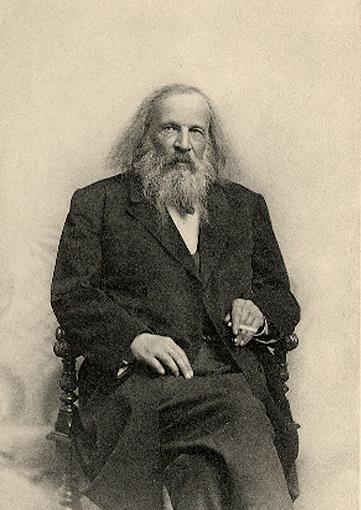

|
|---|
Дмитрий Иванович Менделеев(27 января (8 февраля) 1834, Тобольск — 20 января (2 февраля) 1907, Санкт-Петербург)Русский учёный-энциклопедист: химик, физикохимик, физик, метролог, экономист, технолог, геолог, метеоролог, нефтяник, педагог, воздухоплаватель, приборостроитель.Среди его самых известных открытий — периодический закон химических элементов, один из фундаментальных законов мироздания, неотъемлемый для всего естествознания. Менделеев - втор классического труда «Основы химии». Д. И. Менделеев — автор фундаментальных исследований по химии, физике, метрологии, метеорологии, экономике, основополагающих трудов по воздухоплаванию, сельскому хозяйству, химической технологии, народному просвещению и других работ, тесно связанных с потребностями развития производительных сил России. Менделеев исследовал (1854—1856) явления изоморфизма, раскрывающие отношения между кристаллической формой и химическим составом соединений, а также зависимость свойств элементов от величины их атомных объёмов. Открыл в 1860 году «температуру абсолютного кипения жидкостей», или критическую температуру, в 1859 году сконструировал прибор для определения плотности жидкости. Создал в 1865—1887 годах гидратную теорию растворов. Развил идеи о существовании соединений переменного состава. Работа над учебным пособием «Основы химии» позволила Менделееву задуматься над природой химических элементов. В результате этих размышлений 1 марта (17 февраля) 1869 года был завершен самый первый целостный вариант Периодической системы химических элементов, который получил тогда название «Опыт системы элементов, основанной на их атомном весе и химическом сходстве», в котором элементы были расставлены по девятнадцати горизонтальным рядам (рядам сходных элементов, ставших прообразами групп современной системы) и по шести вертикальным столбцам (прообразам будущих периодов). Эта дата знаменует собой открытие Менделеевым Периодического закона, но более верным считать эту дату началом открытия, поскольку требовалось его осмысление и затем достижение формулировки. Согласно окончательной хронологии первых публикаций Таблицы Менделеева, впервые Таблица была опубликована 26-27 марта (14-15 марта) 1869 года в 1-м издании учебника Менделеева «Основы Химии» (ч. 1, вып. 2). И уже после этого, осознав во время двухнедельной поездки по провинции великое значение своего открытия, Менделеев по возвращении в Петербург заказал в середине марта в типографии «Общественная польза» отдельные листки с этой таблицей, которые были напечатаны 29 марта (17 марта) 1869 года специально для рассылки «многим химикам». Позднее, уже в начале мая 1869 года «Опыт системы элементов» был напечатан с химическим обоснованием в программной статье Менделеева «Соотношение свойств с атомным весом элементов» (журнал Русского химического общества). Напечатанные листки достигли своей цели — в апреле 1869 года состоялась первая публикация Таблицы Менделеева в международной печати, согласно точной хронологии, она вышла в свет 17 апреля (5 апреля) 1869 года в лейпцигском «Журнале практической химии» и стала достоянием мировой науки. |
Меню |
Изображение |
©2021 |
|---|